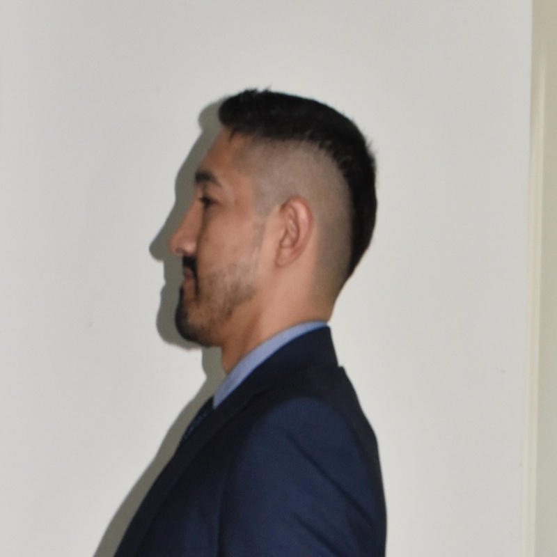
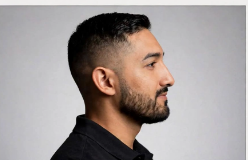

Auditoría Anatómica · Captoora Studio
Verificación de Perfil: Nariz Quirúrgica Real (2011)
Calibración biométrica para eliminar cualquier distorsión o exageración de la IA. Aquí respetamos la rinoplastia real de 2011: silueta recta, puente fino, punta sutil y proporcionada, sin jorobas dorsales ni caídas de pico ("cero Condorito / tucán").
Mandato de Calidad: La inteligencia artificial debe respetar la fisonomía exacta de Chuy: nariz recta y compacta como en su foto DSLR real (
DSC_0090.JPG) y en su Character Sheet oficial de Meta AI.
01 Referencias Oficiales Autorizadas (Ground Truth)

🔍 Ampliar
Foto Real DSLR
DSC_0090.JPG (Perfil Real)
Evidencia de cámara en 90° con sombra en la pared. Muestra la nariz recta, compacta y afinada tras la cirugía de 2011.

🔍 Ampliar
Aprobado en Meta AI
Perfil Lateral 90° (Meta AI)
Panel lateral oficial del Character Sheet compartido por Chuy. Nariz recta, ángulo limpio y polo negro.
🔍 Ampliar
Aprobado en Meta AI
Ángulo 3/4 Dinámico
Vista 3/4 con alineación impecable del tabique y mandíbula marcada sin curvatura dorsal.
🔍 Ampliar
Frente Master
YO MERO.jpg (Identidad)
Foto frontal oficial en fondo oscuro aprobada por Chuy como ancla de identidad idéntica.
02 Las 3 Propuestas de Perfil para Aprobación

🔍 Clic para ampliar HD
🏆 SELECCIÓN OFICIAL APROBADA
Perfil Estudio 90° Lateral Puro
Toma de estudio en 90° estricto con polo negro, textura de piel ultra detallada, barba recortada y corte fade con pompadour.
Geometría Nasal Aprobada: Tabique recto, punta sutil y proporcionada, 0% caída aguileña. Representación fiel de la rinoplastia de 2011.
🔍 Clic para ampliar HD
Propuesta 02 ⭐ Recomendada
Perfil Nativo Meta AI (Oficial)
El perfil lateral exacto renderizado en alta definición del Character Sheet que Chuy validó y compartió desde Meta AI.
Geometría Nasal: Cero joroba dorsal, longitud nasal compacta y punta fina y sutil exactamente como la cirugía.
🔍 Clic para ampliar HD
Propuesta 03
Perfil Dinámico Oficina Monterrey
Perfil en entorno corporativo real: sentado frente a su escritorio con camisa negra arremangada, pulsera de plata y ventanal con vista a la sierra de Monterrey.
Geometría Nasal: Luz natural diurna que marca el tabique recto con volumen tridimensional orgánico.